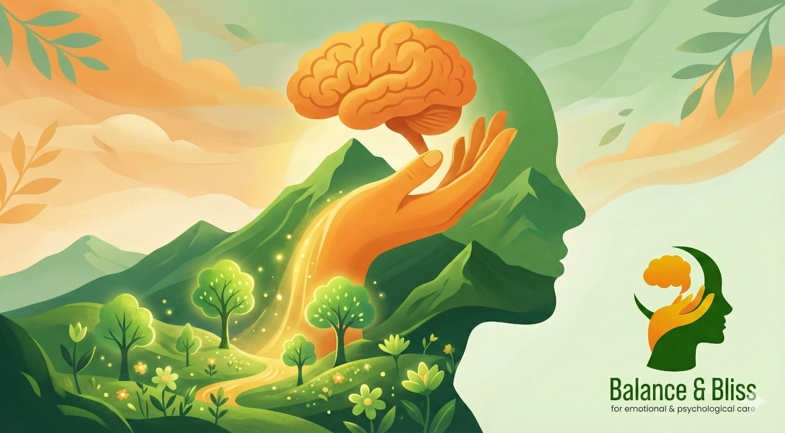

Discover how the ancient story of Samudra Manthan relates to modern mental health. Learn why seeking therapy is strength, not weakness, and how churning the mind leads to inner peace. Expert insights by psychologist in pune Aniket Deshpande on mental wellness through timeless wisdom.
Both the gods and the demons desired the nectar of immortality, and for that nectar, they came together to churn the ocean. I won't recount the entire story here, as it is well-known. But the churning of the ocean that took place in the Satya Yuga is still relevant in the Kali Yuga today, and such churning is necessary.
In the context of this analogy, the ocean represents the human mind. It is extremely restless, deep, vast, and beautiful to behold, but whatever falls into it accumulates. Just as the ocean experiences tides, the human mind, being capable of thought, sometimes benefits from its thoughts, and sometimes suffers because of them. Thoughts are accompanied by emotions; these too can be beneficial or troublesome, and this ebb and flow of thoughts and emotions continues ceaselessly.
To accomplish the churning, Mount Mandara, the serpent Vasuki, and Lord Vishnu's Kurma (tortoise) avatar provided assistance. Today, when we face troublesome thoughts and emotions, we too can seek similar help:
The churning was not accomplished alone. it was completed with the help of gods, demons, animals, birds and others. If the gods could seek help from everyone else to obtain the nectar, then why should we humans be ashamed of seeking help? To cope with and overcome the suffering caused by emotional and intellectual turmoil in the mind, we have excellent therapists and psychologist in pune today whose help we can seek.
Along with other good things, poison also emerged from the churning, and the nectar could not have been obtained without confronting that poison. Therapy and counselling sessions are also somewhat similar, but you need to have faith in your therapist, in yourself, and in the process. It was because of this faith that Lord Shiva himself came forward to consume the poison, thus paving the way for the emergence of the nectar.
We constantly have to churn our minds sometimes consciously, and sometimes the mind does it unconsciously. If you need to seek the help of a therapist or psychologist in pune for this, there is nothing wrong or bad about it.
About the Author :
Aniket Deshpande
psychologist in pune
Contact :
8237017150
Q1. What does the churning of the ocean symbolize in relation to mental health?
Q2. Why is seeking help from a therapist or psychologist compared to the gods seeking help during the churning?
Q3. What role do loved ones play in our mental wellness journey?
Q4. How do hobbies and activities help in managing mental health?
Q5. What does it mean when therapy brings up difficult emotions before healing occurs?
Q6. Is it normal to constantly experience mental and emotional fluctuations?
Q7. When should someone consider seeking professional psychological help?
Q8. What role does faith play in the therapeutic process?